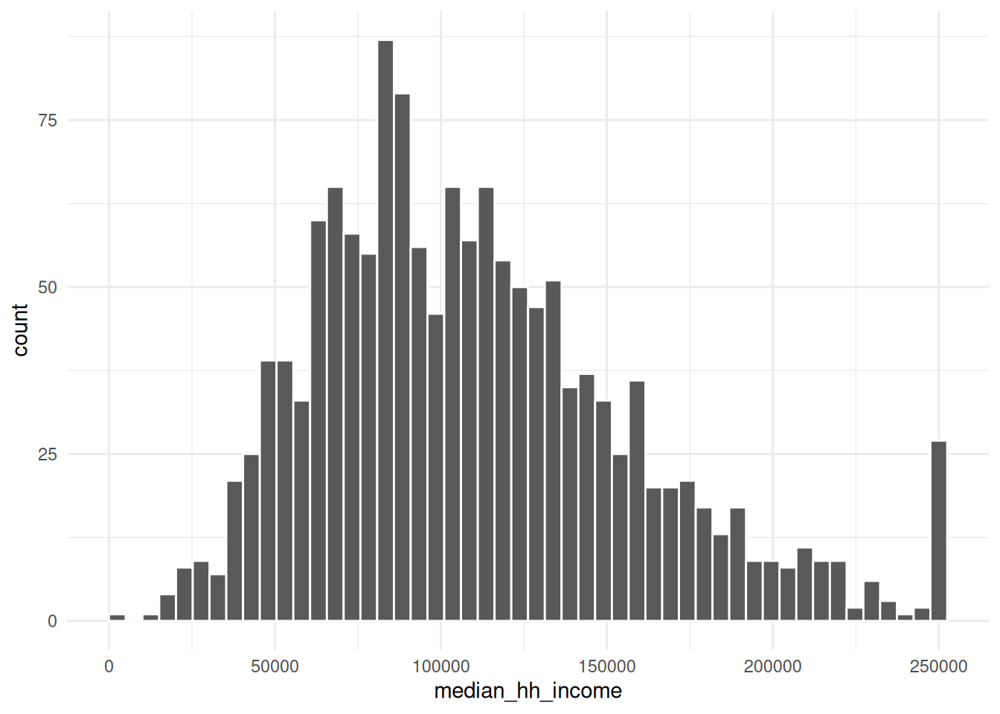
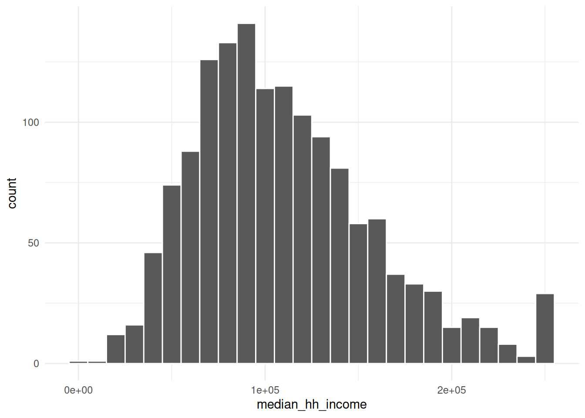
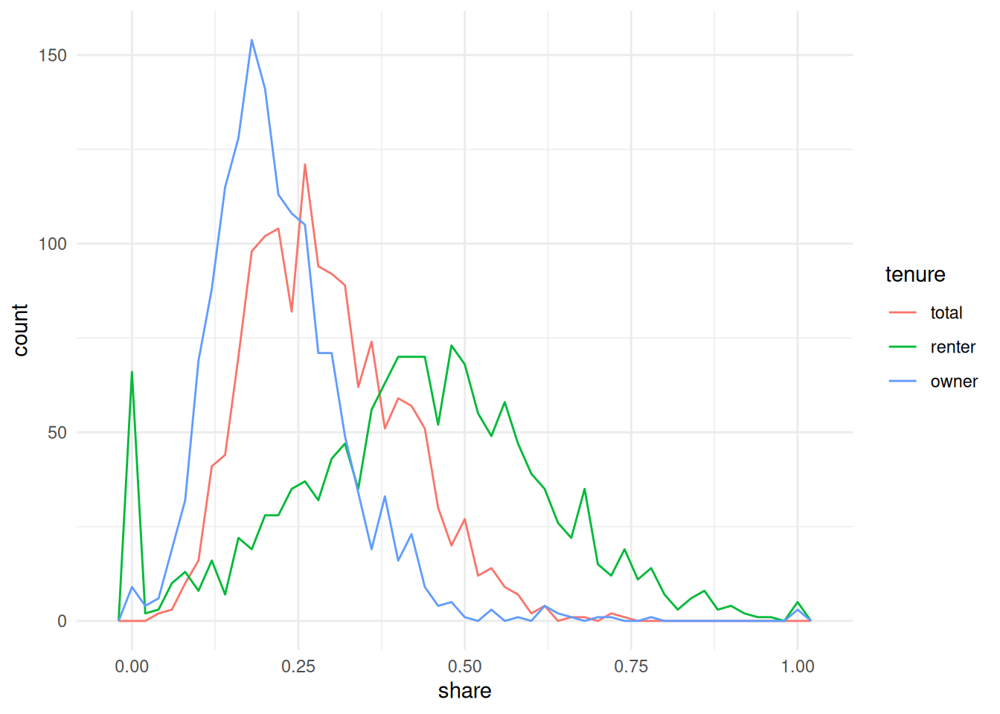
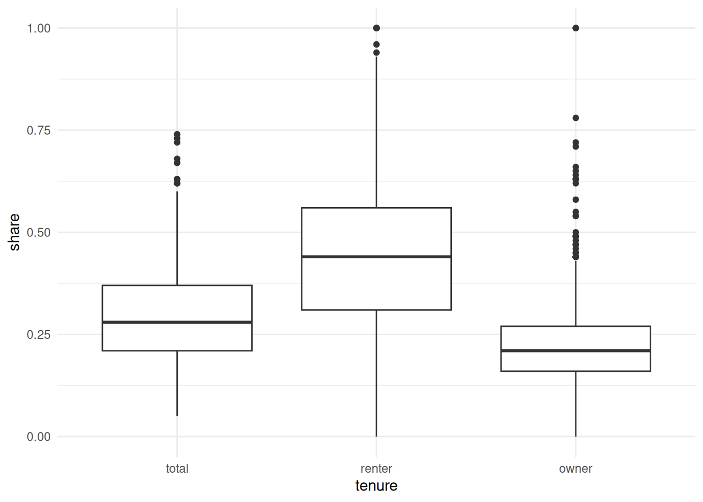
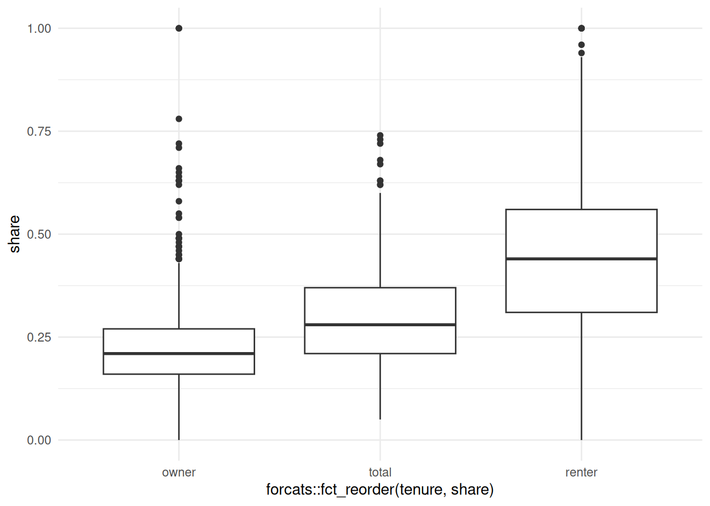

Exploratory data visualization (EDV) is a method of using visualization to learn about your data. It’s how you’ll make the majority of your charts, eventually pulling out one or two to polish (maybe).
I’m saying exploratory data visualization here rather than exploratory data analysis, because we won’t be doing the basic analyses, summary statistics, crappy hypothesis testing, etc. that would normally make up a more well-rounded EDA. Just the data viz.
Wickham, H., Çetinkaya-Rundel, M., & Grolemund, G. (2023). R for data science (2nd ed.). O’Reilly Media, Incorporated. https://r4ds.hadley.nz/
There is no rule about which questions you should ask to guide your research. However, two types of questions will always be useful for making discoveries within your data. You can loosely word these questions as: - What type of variation occurs within my variables? - What type of covariation occurs between my variables?
The questions I usually ask myself (or my boss asks me) in doing EDA/EDV are some variation on:
What overall patterns are here?
Are they interesting?
Are they surprising?
How are interesting/surprising patterns related to each other?
We’ll follow many of the steps of the EDA chapter using the acs dataset in the {justviz} package. For simplicity, we’ll focus on Maryland census tracts and just a few variables dealing with housing and income.
Start by just looking at your data. Get a summary of it. Figure out what each variable means and what its scale should be.
library(ggplot2)# set a default theme---easier to see some examplestheme_set(theme_minimal())# make histogram default to a white border around barsupdate_geom_defaults("histogram", list(color ="white"))acs_all_tracts <- justviz::acs |> dplyr::filter(level =="tract") |> dplyr::select( county, name, total_pop, total_hh, homeownership, total_cost_burden, renter_cost_burden, owner_cost_burden, no_vehicle_hh, median_hh_income, total_vacant_units, pop_density )head(acs_all_tracts)
county
name
total_pop
total_hh
homeownership
total_cost_burden
renter_cost_burden
owner_cost_burden
no_vehicle_hh
median_hh_income
total_vacant_units
pop_density
Allegany County
24001000100
3334
1403
0.78
0.19
0.20
0.19
0.03
63415
0.30
17.74039
Allegany County
24001000200
4030
1343
0.90
0.19
0.29
0.18
0.05
67724
0.14
83.83255
Allegany County
24001000500
2108
786
0.58
0.36
0.62
0.18
0.23
34545
0.31
476.60452
Allegany County
24001000600
2830
1349
0.73
0.19
0.30
0.15
0.10
52250
0.11
1788.34855
Allegany County
24001000700
3293
1391
0.45
0.41
0.51
0.28
0.18
36673
0.22
4622.72767
Allegany County
24001000800
1890
816
0.47
0.44
0.55
0.32
0.21
28056
0.22
1496.26735
summary(acs_all_tracts)
county name total_pop total_hh
Length :1460 Length :1460 Min. : 2 Min. : 0
N.unique : 24 N.unique :1460 1st Qu.: 2968 1st Qu.:1138
N.blank : 0 N.blank : 0 Median : 4057 Median :1553
Min.nchar: 11 Min.nchar: 11 Mean : 4251 Mean :1618
Max.nchar: 22 Max.nchar: 11 3rd Qu.: 5370 3rd Qu.:2030
Max. :14748 Max. :5132
homeownership total_cost_burden renter_cost_burden owner_cost_burden
Min. :0.0000 Min. :0.0500 Min. :0.0000 Min. :0.0000
1st Qu.:0.5100 1st Qu.:0.2100 1st Qu.:0.3100 1st Qu.:0.1600
Median :0.7450 Median :0.2800 Median :0.4400 Median :0.2100
Mean :0.6763 Mean :0.2974 Mean :0.4316 Mean :0.2246
3rd Qu.:0.8900 3rd Qu.:0.3700 3rd Qu.:0.5600 3rd Qu.:0.2700
Max. :1.0000 Max. :0.7400 Max. :1.0000 Max. :1.0000
NAs :4 NAs :4 NAs :7 NAs :13
no_vehicle_hh median_hh_income total_vacant_units pop_density
Min. :0.00000 Min. : 2499 Min. :0.00000 Min. : 0.419
1st Qu.:0.02000 1st Qu.: 74966 1st Qu.:0.02000 1st Qu.: 1006.389
Median :0.05000 Median :103192 Median :0.05000 Median : 3455.259
Mean :0.09591 Mean :110249 Mean :0.07119 Mean : 4958.910
3rd Qu.:0.12000 3rd Qu.:137163 3rd Qu.:0.09000 3rd Qu.: 6796.855
Max. :0.81000 Max. :250001 Max. :0.90000 Max. :56280.606
NAs :4 NAs :8 NAs :4
Make sure nothing looks weird:
We’re using Maryland tracts, so there should be 24 unique values of county because there are 24 counties
Many of the numeric variables have some missing values (NA), but none have more than a few missing
Some numeric variables have very high maximum values, such as 100% owner cost burden rates. Keep this in mind as we go.
Variation
First a histogram of median household income values:
There’s a message and a warning: the message suggests being intentional about the number of bins, and the warning calls our attention to missing values in this column.
Use the next few chunks of code to experiment with bin specifications. Does your understanding of the data’s distribution change?
ggplot(acs_all_tracts, aes(x = median_hh_income)) +geom_histogram(bins =50) # bins can be determined by setting the number of bins

ggplot(acs_all_tracts, aes(x = median_hh_income)) +geom_histogram(binwidth =10000) # or by the width of bins, with a scale corresponding to the x-axis

What are some values of bins or binwidth that seem reasonable? At what point do either of them start to obscure data?
Even though we’re probably not going to use the total population and total household variables for any analysis here, I kept them because those sorts of variables that define what your observational unit is are important for checking what’s going on in your data. By which I mean a census tract is made up of a bunch of people (usually about 4,000) in a contiguous area who mostly live in households. But if you work with census data enough, you’ll know that some places have population but few households, or only very small populations altogether—a tract might actually be a jail or a set of college dorms, or maybe the majority of a tract is those sorts of group quarters, and the remainder is too small to reliably calculate some of the data. What we want to do with those tracts can depend on context, but I’ll drop them here.
Does anything seem weird about the median household income values? Look back at Figure 1 where it may be more apparent. (We’ll talk about this anomaly in the data.)
This approaches a normal curve, but is skewed. From the histogram, the mean looks to be around 0.3 (looking back at the summary, this is correct), but with quite a few tracts with higher rates. Because this is a proportion, we don’t expect there to be any values below 0 or above 1.
A boxplot can make it a little easier to figure out what’s typical in your distribution.
There are a few tracts that are extremely dense. If we wanted to get a sense of more typical tracts, we could filter those, either from the data or within the limits of the chart:
We could decide to investigate those high-density tracts. For example, if we’re interested in housing costs, we might drop tracts that seem to mostly be dorms. However, at least these tracts in Montgomery County are actually high-rise condos bordering DC, so we should keep them in.
Covariation
Especially when we talk about housing and socio-economic data, we expect things to be correlated—probably even more so than with naturally occurring phenomena, since so much of where we live and what resources we have are determined by history and policy decisions. So it shouldn’t surprise you to find correlations in data like this. In fact, the CDC PLACES dataset (justviz::cdc) uses demographic data to model health measures where they don’t have direct measurements available, so in cases like that you actually want to lean away from digging into correlations too much, or you might end up just confirming the makeup of the model, not finding anything new.
A categorical and a numerical variable
I’ll reshape the data to get housing tenure into one categorical variable so we can study housing cost burden by tenure. (If the code doesn’t make sense, refer back to the data wrangling notes.)
cost_burden <- acs_income_tracts |> tidyr::pivot_longer(cols = dplyr::matches("cost_burden"),names_to ="tenure",values_to ="share" ) |> dplyr::select(county, name, total_hh, tenure, share) |># extract just the text in each tenure label before the underscore dplyr::mutate(tenure = stringr::str_extract(tenure, "^[a-z]+") |> forcats::as_factor() ) |> dplyr::filter(!is.na(share))head(cost_burden)
county
name
total_hh
tenure
share
Allegany County
24001000100
1403
total
0.19
Allegany County
24001000100
1403
renter
0.20
Allegany County
24001000100
1403
owner
0.19
Allegany County
24001000200
1343
total
0.19
Allegany County
24001000200
1343
renter
0.29
Allegany County
24001000200
1343
owner
0.18
ggplot(cost_burden, aes(x = share, color = tenure)) +geom_freqpoly(binwidth =0.02)

The bit about calling after_stat in the book chapter doesn’t apply here, since we have the same number of observations for each tenure.
ggplot(cost_burden, aes(x = tenure, y = share)) +geom_boxplot()

ggplot( cost_burden,aes(x = forcats::fct_reorder(tenure, share), y = share)) +geom_boxplot()

Two categorical variables
This is a pretty contrived example to match section 10.5.2, but I’ll bin homeownership and housing cost burden into categorical variables, and look at these by count.